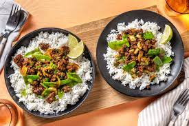

Odin Recipes

Hoisin Beef
A spicy, sweet and smoky meat dish
complemented with a good heaping
of rice
Ingredients
- Garlic Clove
- Basmati Rice
- Beef Mince
- Thai Style Spice
- Hoisin Sauce
- Honey
- 100ml Water
Steps
- Chop garlic
- Boil rice
- Start cooking beef in pan at a
medium-high heat
- Once beef has browned at garlic
- After 3 minutes lower heat to medium
and add spices and sauce
- Add water and allow to simmer
- Once most of the water has evaporated,
stir in tablespoon of honey
- Serve with rice and allow to sit